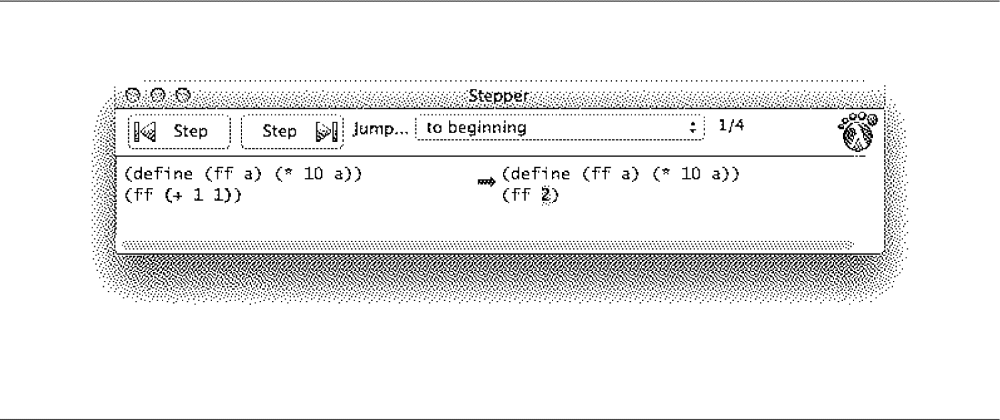
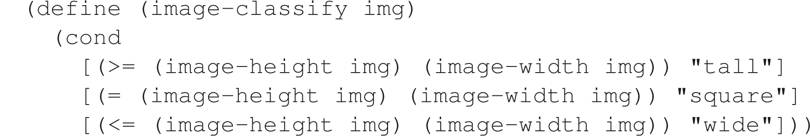
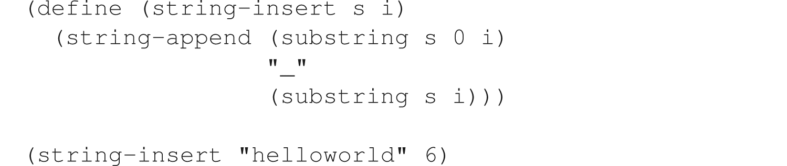

2.2 Computing
Function definitions and applications work in tandem. If you want to design programs, you must understand this collaboration because you need to imagine how DrRacket runs your programs and because you need to figure out what goes wrong when things go wrong—and they will go wrong.
While you may have seen this idea in an algebra course, we prefer to explain it our way. So here we go. Evaluating a function application proceeds in three steps: DrRacket determines the values of the argument expressions; it checks that the number of arguments and the number of function parameters are the same; if so, DrRacket computes the value of the body of the function, with all parameters replaced by the corresponding argument values. This last value is the value of the function application. This is a mouthful, so we need examples.
Here is a sample calculation for f:
(f (+ 1 1))
== ; DrRacket knows that (+ 1 1) == 2
(f 2)
== ; DrRacket replaced all occurrences of x with 2
1
That last equation is weird because x does not occur in the body of f. Therefore, replacing the occurrences of x with 2 in the function body produces 1, which is the function body itself.
For ff, DrRacket performs a different kind of computation:
(ff (+ 1 1))
== ; DrRacket again knows that (+ 1 1) == 2
(ff 2)
== ; DrRacket replaces a with 2 in ff's body
(* 10 2)
== ; and from here, DrRacket uses plain arithmetic
20
The best point is that when you combine these laws of computation with those of arithmetic, you can pretty much predict the outcome of any program in BSL:
(+ (ff (+ 1 2)) 2)
== ; DrRacket knows that (+ 1 2) == 3
(+ (ff 3) 2)
== ; DrRacket replaces a with 3 in ff's body
(+ (* 10 3) 2)
== ; now DrRacket uses the laws of arithmetic
(+ 30 2)
==
32
Naturally, we can reuse the result of this computation in others:
(* (ff 4) (+ (ff 3) 2))
== ; DrRacket substitutes 4 for a in ff's body
(* (* 10 4) (+ (ff 3) 2))
== ; DrRacket knows that (* 10 4) == 40
(* 40 (+ (ff 3) 2))
== ; now it uses the result of the above calculation
(* 40 32)
==
1280 ; because it is really just math
In sum, DrRacket is an incredibly fast algebra student; it knows all the laws of arithmetic and it is great at substitution. Even better, DrRacket cannot only determine the value of an expression; it can also show you how it does it. That is, it can show you step-by-step how to solve these algebra problems that ask you to determine the value of an expression.
Take a second look at the buttons that come with DrRacket. One of them looks like an “advance to next track” button on an audio player. If you click this button, the stepper window pops up and you can step through the evaluation of the program in the definitions area.
Enter the definition of ff into the definitions area. Add (ff (+ 1 1)) at the bottom. Now click the STEP. The stepper window will show up; figure 11 shows what it looks like in version 6.2 of the software. At this point, you can use the forward and backward arrows to see all the computation steps that DrRacket uses to determine the value of an expression. Watch how the stepper performs the same calculations as we do.

Figure 11: The DrRacket stepper
Stop! Yes, you could have used DrRacket to solve some of your algebra homework. Experiment with the various options that the stepper offers.
Exercise 21. Use DrRacket’s stepper to evaluate (ff (ff 1)) step-by-step. Also try (+ (ff 1)(ff 1)). Does DrRacket’s stepper reuse the results of computations? 
At this point, you might think that you are back in an algebra course with all these computations involving uninteresting functions and numbers. Fortunately, this approach generalizes to all programs, including the interesting ones, in this book.
Let’s start by looking at functions that process strings. Recall some of the laws of string arithmetic:
(string-append "hello" " " "world") == "hello world"
(string-append "bye" ", " "world") == "bye, world"
…
Now suppose we define a function that creates the opening of a letter:
(define (opening first-name last-name)
(string-append "Dear " first-name ","))
When you apply this function to two strings, you get a letter opening:
> (opening "Matthew" "Fisler")
"Dear Matthew,"
More importantly, though, the laws of computing explain how DrRacket determines this result and how you can anticipate what DrRacket does:
(opening "Matthew" "Fisler")
== ; DrRacket substitutes "Matthew" for first-name
(string-append "Dear " "Matthew" ",")
==
"Dear Matthew,"
Since last-name does not occur in the definition of opening, replacing it with "Fisler" has no effect.
The rest of the book introduces more forms of data. To explain operations on data, we always use laws like those of arithmetic in this book.
Eventually you will encounter imperative operations, which do not combine or extract values but modify them. To calculate with such operations, you will need to add some laws to those of arithmetic and substitution.
Exercise 22. Use DrRacket’s stepper on this program fragment:
(define (distance-to-origin x y)
(sqrt (+ (sqr x) (sqr y))))
(distance-to-origin 3 4)
Does the explanation match your intuition?
Exercise 23. The first 1String in "hello world" is "h". How does the following function compute this result?
(define (string-first s)
(substring s 0 1))
Use the stepper to confirm your ideas.
Exercise 24. Here is the definition of ==>: y
(define (==> x y)
(or (not x) y))
Use the stepper to determine the value of (==> #true #false).
Exercise 25. Take a look at this attempt to solve exercise 17:

Does stepping through an application suggest a fix?
Exercise 26. What do you expect as the value of this program:

Confirm your expectation with DrRacket and its stepper.